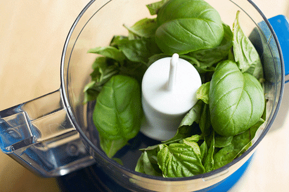

Pesto

Basic pesto, made with basil, olive oil, pine nuts, and Parmesan cheese. This recipe differs from the classic preparation by the addition of parsley. You can add a little extra Parmesan to the mixture if you like.
Ingredients
- 3 cups packed fresh basil leaves
- 4 cloves garlic
- ¾ cup grated Parmesan cheese
- ½ cup olive oil
- ¼ cup pine nuts
- ½ cup chopped fresh parsley
- Combine basil, garlic, Parmesan cheese, olive oil, and nuts in the bowl of a food processor or blender.
- Blend to a smooth or chunky paste. Add salt to taste.
- Enjoy on pasta, bread, salad, or on the side.
Home Page